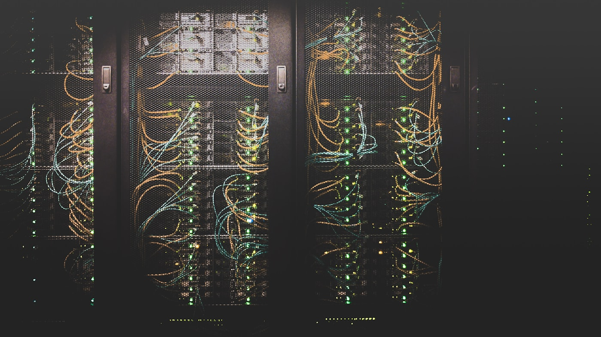

Unit 1
AI-Powered Assistants in Business Transformation
This page is my e-portfolio evidence for Launch into Computing, part of the MSc Artificial Intelligence with the University of Essex (delivered through University of Essex Online). The overview and outcomes below follow the module handbook; my own artefacts, reflection, and meeting notes follow further down.
The following is my own summary of what Launch into Computing aims for me to learn, and what I am expected to be able to do when I complete the module — drawn from the official module handbook and kept here for my e-portfolio.
AI-Powered Assistants in Business Transformation

Logic Circuit Design: Practical Implementation of Boolean Algebra

Algorithm Analysis and Implementation

Comparative Analysis of Software Development Methodologies

Data Analytics with Python and Data Storage Reflection

Implementing and Evaluating a Simple AI Model

Security Risk Assessment Report